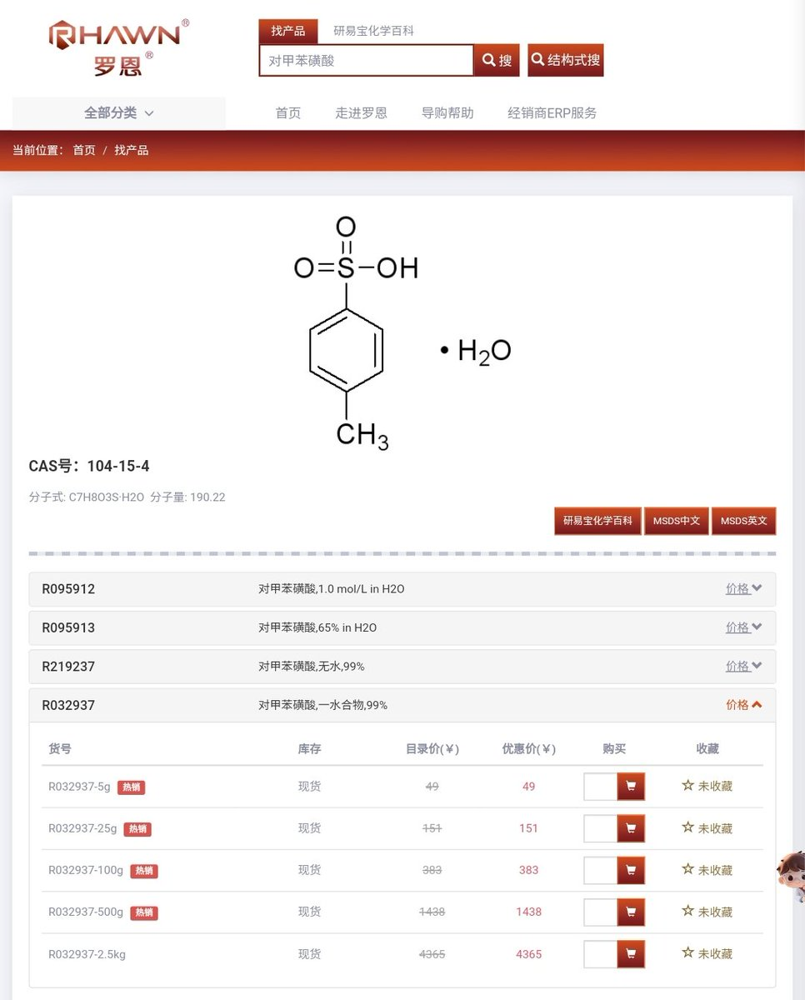
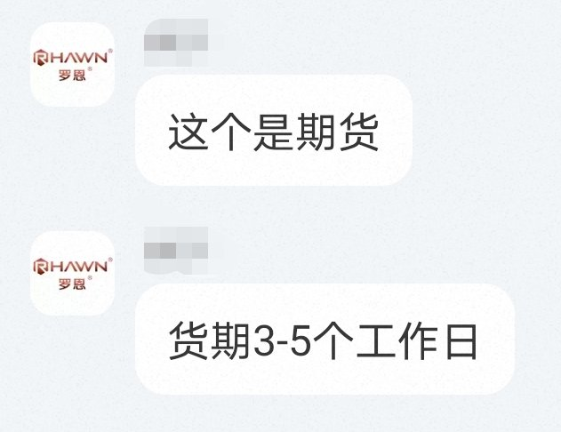

一定警察知道灰产造成严重危害,必定会开始打铁拳.
在中国,警察一直知道亚硝酸钠可以用来制造毒品,制造爆炸物,却没有因此进行严格执行监管措施.现在却因为有人用它来自杀而管制.
由此可见用亚硝酸钠自杀比用它来制毒制爆的危害还大.
同理,现在警察知道死者是通过翻墙上推知道自杀法的,下一步是什么?细品

在中国,警察一直知道亚硝酸钠可以用来制造毒品,制造爆炸物,却没有因此进行严格执行监管措施.现在却因为有人用它来自杀而管制.
由此可见用亚硝酸钠自杀比用它来制毒制爆的危害还大.
同理,现在警察知道死者是通过翻墙上推知道自杀法的,下一步是什么?细品


后果已经有了,亚硝酸钠又买不到了;图中的试剂店(罗恩试剂),已暂停发任何化学品.你们鼓励化学自杀的人,不仅是害想自杀的人,还是害其他可能搞化学的无辜人.
我不管其他自杀方法.明知危害还鼓励化学自杀的,我诅咒你们因为自己这辈子害人深重,下辈子投胎还投到中国,结果因为化学品都列管,想死还没门.
结束. https://t.co/OKexHjRvVz
我不管其他自杀方法.明知危害还鼓励化学自杀的,我诅咒你们因为自己这辈子害人深重,下辈子投胎还投到中国,结果因为化学品都列管,想死还没门.
结束. https://t.co/OKexHjRvVz